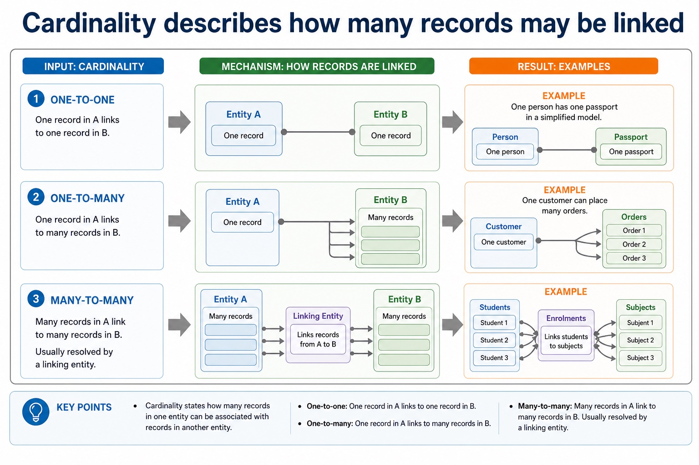

Entity-relationship diagrams
Visual overview
Cardinality describes how many records may be linked

Visual transcript
- Cardinality states how many records in one entity can be associated with records in another entity.
- One-to-one One record in A links to one record in B. Example: one person has one passport in a simplified model.
- One-to-many One record in A links to many records in B. Example: one customer can place many orders.
- Many-to-many Many records in A link to many records in B. Usually resolved by a linking entity.
- 1 - many
Core explanation
An entity-relationship (E-R) diagram documents a database design by showing the entities, their relevant attributes or keys, the relationships between entities and the relationship cardinality. Entity names should describe things about which the system stores multiple facts; attributes belong to the entity they describe.
Database design review: connect each file-based limitation to a relational or DBMS mechanism; use entity/table, record/tuple and field/attribute precisely; distinguish candidate, primary, secondary and foreign keys; classify one-to-one, one-to-many and many-to-many relationships; apply referential integrity and indexing; document the design with an E-R diagram; and explain or produce 1NF, 2NF and 3NF designs.
To produce an E-R diagram, extract entity candidates from the scenario, assign identifiers, connect only supported relationships and label cardinality as one-to-one, one-to-many or many-to-many. Resolve a many-to-many relationship with a linking entity when converting the design to relational tables. A diagram must preserve the stated business rules rather than inventing links from similar field names.